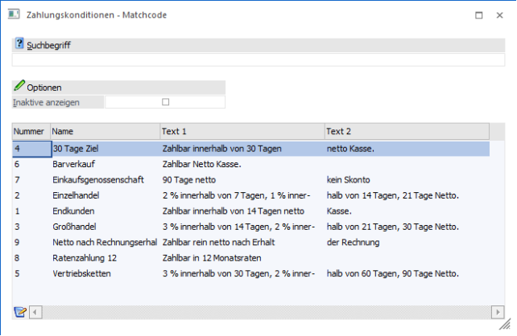
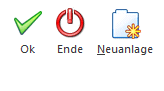
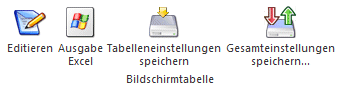

Im Fenster Zahlungskonditionen - Matchcode, das in allen Feldern aufgerufen werden kann, wo eine Zahlungskondition eingegeben werden kann, kann nach allen angelegten Zahlungskonditionen gesucht werden. Standardmäßig wird eine Volltextsuche über alle Felder durchgeführt.
Ø Suchbegriff
Nach Eingabe bzw. Übernahme des Suchbegriffs wird die Tabelle mit allen gefundenen Zahlungsarten gefüllt, wobei inaktive Zahlungskonditionen standardmäßig nicht angezeigt werden.
Ø Inaktive anzeigen
Wenn diese Option aktiviert ist, dann werden auch die Zahlungskonditionen angezeigt, die auf inaktiv gesetzt sind.
In der Tabelle sind folgende Infos ersichtlich:

Ø Nummer
Hier wird die interne Nummer der Zahlungskondition angezeigt. Die interne Nummer ist sonst nicht sichtbar, trotzdem kann über die Nummer eine Zahlungskondition aufgerufen werden.
Ø Name
Name der Zahlungskondition. Der Name wird in weiterer Folge auch in das entsprechende Eingabefeld übernommen.
Ø Text 1 / Text 2
Hier sind die Zusatzinformationen aus dem Zahlungskonditionenstamm ersichtlich, sofern hinterlegt.
Folgende Felder können noch über die rechte Maustaste / Spalten anzeigen/verstecken optional eingeblendet werden:
Ø Notiz
Hier wird der Notiztext aus der Zahlungskondition, in der auch die Volltextsuche durchgeführt wird, angezeigt.
Ø Inaktiv seit
Wenn auch inaktive Zahlungskonditionen angezeigt werden, dann ist hier das Datum ersichtlich, an dem die Zahlungskondition auf Inaktiv gesetzt wurde.
Buttons

Ø OK
Durch Anklicken des OK-Buttons oder durch Drücken der F5-Taste wird die Suche nochmals neu ausgelöst.
Ø ENDE
Durch Anklicken des ENDE-Buttons oder durch Drücken der ESC-Taste wird das Matchcode-Fenster geschlossen.
Ø Neuanlage
Sofern der Matchcode nicht aus dem Stamm-Fenster aufgerufen wurde, kann über diesen Button in das Stamm-Fenster gewechselt werden, um eine neue Zahlungskondition anzulegen.
Wenn in der Ergebnis-Tabelle eine Zahlungskondition markiert wird, stehen noch folgende Buttons zur Verfügung.
Tabellenbuttons

Ø Editieren
Durch Anwahl des Buttons "Editieren" kann die ausgewählte Zahlungskondition im Stamm-Fenster bearbeitet werden. Der Button steht nicht zur Verfügung, wenn der Matchcode aus dem Zahlungskonditionen-Stammfenster aufgerufen wurde.
Ø Ausgabe Excel
Durch Anwahl des Buttons "Ausgabe Excel" wird der Inhalt der Tabelle nach Microsoft Excel übergeben.
Ø Tabelleneinstellungen speichern
Die Spalten einer Tabelle können grundsätzlich an beliebige Positionen verschoben, bzw. in der Breite entsprechend angepasst werden. Durch Anwahl des Buttons "Tabelleneinstellungen speichern" werden die Einstellungen benutzerspezifisch gespeichert und bei dem nächsten Aufruf des Programmpunktes wieder vorgeschlagen.
Ø Gesamteinstellungen speichern
Im Gegensatz zu "Tabelleneinstellungen speichern" können mit "Gesamteinstellungen speichern" mehrere Tabellenaufbauten gespeichert und nach Wunsch geladen werden. Zusätzlich werden Sonderfunktionen der Tabelle (z.B. "Spalte gruppieren") ebenfalls bei der Speicherung bedacht.
Die gewünschte Zahlungskondition kann mittels Doppelklick in das Eingabefeld übernommen werden.